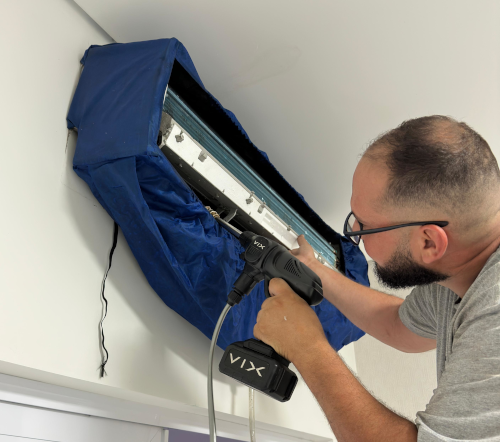
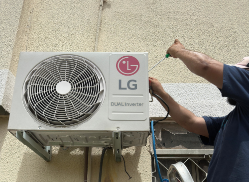
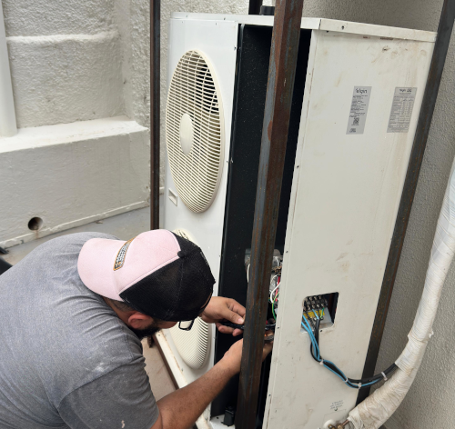

ZAP REFRIGERAÇÃO
Olá, seja bem-vindo(a)!
Telefones: (65) 9326-2010 / (XX) XXXXX-XXXX
  
Manutenção de Ar Condicionado
Serviços de Manutenção de Ar Condicionado
Telefones: (65) 9326-2010 / (XX) XXXXX-XXXX